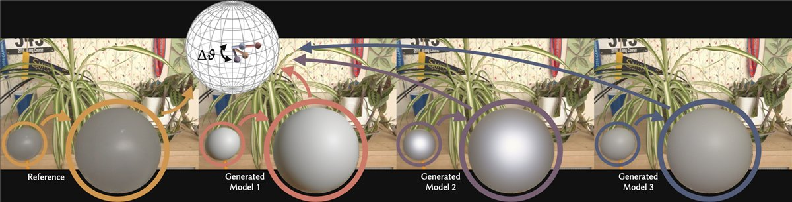
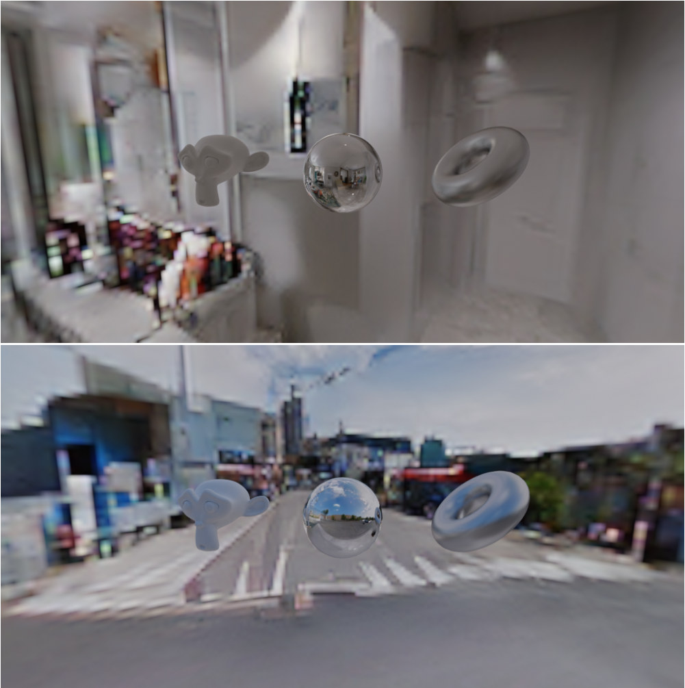
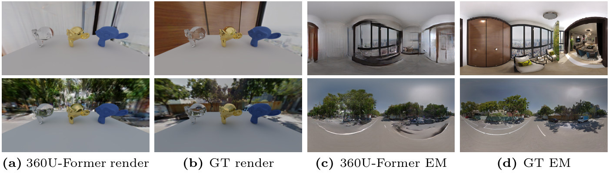
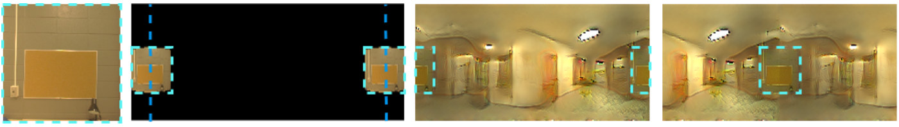

Projects & Demos
A summary of the main things I have worked on. Where a project has an interactive demo, it is linked from its entry.


Shedding Light
Do generative image models truly understand lighting? We benchmark 16 models by asking them to inpaint light probes into real photographs, then measure how accurately the generated probes reproduce the ground-truth illumination in direction, colour, and radiance distribution.


HDR Environment Maps with Latent Diffusion
Leveraging the Latent Diffusion Model (LDM) for higher quality HDR environment map generation and an exploration into adapting the latent Vision-Transformer architecture to Equirectangular Panoramas (ERP). We remove the often ubiquitous border seam artefact by proposing an ERP convolutional padding in the latent autoencoder. Additionally, we investigate whether adapting the diffusion network architecture to the ERP format can further improve the quality and accuracy of the estimated environment map by proposing a panoramically-adapted Diffusion Transformer architecture, PanoDiT.


360U-Former
We explore how tailoring the neural network architecture to the Equirectangular Panorama (ERP) format, utilised in image-based lighting, can improve the generation quality by preventing the generation of the seam at the side borders and textures or objects that are warped at the poles. We propose a novel architecture, 360U-Former, based on a U-Net style Vision-Transformer which leverages the work of PanoSWIN, an adapted shifted window attention tailored to the ERP format.


HDR Illumination Outpainting
A method for single-view illumination estimation of indoor scenes that incorporates state-of-the-art outpainting methods: multi-stage GANs, an inside-out manipulation of the image. The use of these methods used in GAN outpainting aims to improve the generation quality and remove the artefacts introduced by using equirectangular panoramas in traditional convolutional networks.